cortex-M系列MCU如何调试hardfault
一. 相关知识
嵌入式设备发生fault的原因有很多，比如对一个NULL指针的使用，除零，数组越界，以及非法的访问。
在日常开发过程中，我们首先要遵循开发规范，尽量避免产生fault，也需要借助静态分析工具和全覆盖的动态测试来揪出错误。
但是我们有时仍不能避免fault的产生，此时我们就要借助一些调试方法。对于任何嵌入式工程师来说，了解如何快速的调试和解决此类问题是非常重要的技能。
1.1 Configurable Fault Status Registers (CFSR) - 0xE000ED28
这个32位的寄存器包含发生并导致faults的信息，该寄存器由三个不同的寄存器组成。
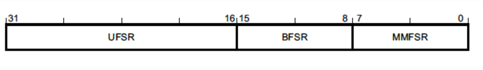我们可以通过直接读取0xE000ED28访问，或者单独读取每个寄存器的值。
MemManage Fault Status Register (MMFSR) *(uint8_t *)0xE000ED28/p>
Usage Fault Status Register (UFSR) *(uint16_t *)0xE000ED2A
Bus Fault Status Register (BFSR) *(uint8_t *)0xE000ED29
MMFSR内存保护单元的错误。通常，MPU fault 只会在MPU已由固件配置和启用时触发。然而，有一些内存访问错误总会导致MemManage fault，例如尝试从外设地址执行代码。
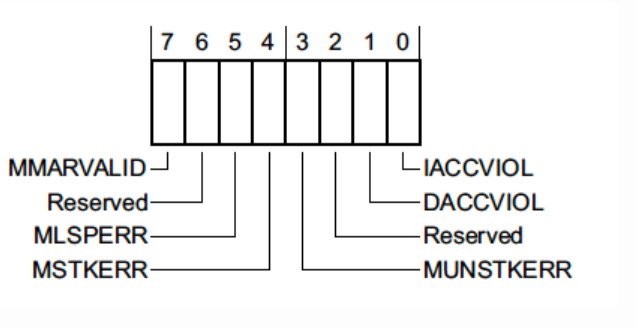●MMARVALID
表示MemManage Fault Address Regeister(MMFAR)-32位寄存器地址是0xE000ED34,保存了触发MemManage fault的地址。
●MLSPERR & MSTKERR
表示浮点惰性状态保存或者异常进入器件发生了 MemManage fault。比如如果使用MPU区域检测到堆栈溢出。
●MUNSTKERR
表示异常反回时发生了fault。通常是一场服务破坏了堆栈指针或者修改了MPU配置。
●DACCVIOL
表示数据访问造成的MemManage fault。通常是用户企图越级访问特权级区域
●IACCVIOL
表示指令访问违规异常。通常发生在尝试执行指令触发MPU 或者 Execute Never(XN) fault。例如：1）对非法地址进行指令访问，例如尝试执行未映射到内存的地址或只读地址。2）尝试执行受保护的存储区域中的指令。
UFSR2个字节，表示在处理器执行期间发现了某种用法错误或违规，例如无效指令或者试图进入无效状态。
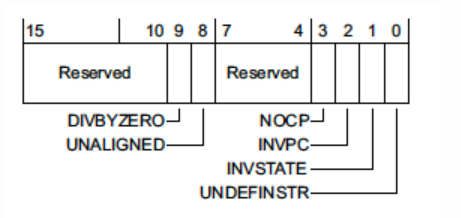●DIVBYZERO
是指在计算过程中发生除零错误（Division by Zero Error）。在不同的计算机体系结构和操作系统中，DIVBYZERO 异常的处理方式可能会有所不同。这个fault是可以配置的。
●UNALIGNED
是指在访问内存时出现非对齐访问（Unaligned Access）的情况。当进行非对齐访问时，即访问未按照要求对齐的内存地址上的数据时，就会触发 UNALIGNED 异常。非对齐访问可能会导致一些计算机体系结构的性能下降或产生不可预测的结果。在 Cortex-M0 中，4字节一下的未对齐访问是否发生故障是可以配置的。
●NOCP
表示执行协处理器指令，但是协处理器已禁用或不存在。协处理器可以执行一些额外的指令或功能，以扩展处理器的能力。然而，并非所有 Cortex-M 处理器都支持协处理器。例如，将代码编译为使用浮点拓展（-mfloat-abi=hard -mfpu=fpv4-sp-d16），但是浮点拓展并未在启动时启用。
●INVPC
表示在 ARM Cortex-M 处理器中的异常返回指令（EXC_RETURN）的完整性检查失败。在 Cortex-M 处理器中，当发生异常时，处理器会根据异常向量表中的地址跳转到相应的异常处理程序。在异常处理程序执行完成后，使用特殊的异常返回指令（EXC_RETURN）返回到原来的执行上下文。
●INVSTATE
表示处理器尝试执行一个无效的Excution Program Status Register（EPSR）值的指令。EPSR 跟踪处理器是否处于 Thumb 模式状态等信息。当我们编写C代码时，编译器会自动处理这个问题，但是当我们手写汇编的时候可能会出现此类问题。
●UNDEFINSTR
表示处理器尝试执行一个未定义的指令。当处理器无法解码或执行某条指令时，就会触发 UNDEFINSTR 异常。
BFSR1个字节，用于记录和指示与总线操作相关的故障情况。当发生与总线访问相关的故障时，处理器会将相应的故障标志设置在 BFSR 中。
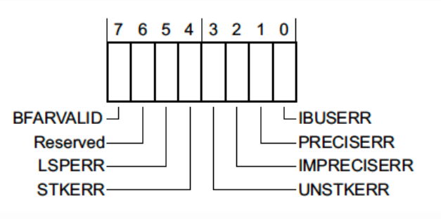BFARVALID
表示总线故障地址寄存器（BFAR），位于0xE000ED38的32位寄存器，保存触发故障的地址。
LSPERR & STKERR
当处理器在执行延迟状态保存（Lazy State Preservation）或异常进入（Exception Entry）过程中发生故障。
UNSTKERR
表示处理器尝试从异常返回时发生错误。如果在异常运行时堆栈已损坏或堆栈指针已更改，但是其内容并未正确初始化，则会出现此类错误。
IMPRECISERR
不精确的数据访问错误，这是一个非常重要的标志位，他告诉我们硬件是否能够确定故障的确切位置。
PRECISERR
表示异常进入之前正在执行的指令触发了故障。
tips：Debug Imprecise Bus ErrorImprecise errors是最难调试的错误之一。它与指令执行流异步产生，这意味着堆栈在异常入口出的寄存器不会指向导致异常的代码。当我们调试此类错误时，我们需要检查异常产生周围的代码，以找到可疑的地方。 如果MCU支持ARM Embedded Trace Macrocell (ETM)，我们可以查看执行指令的历史记录。
二. 在线仿真
2.1 keil + MDK-ARM + jlink
version: 5.30.0.0 version: 7.86f MCU: stm32f103
执行下面这段代码
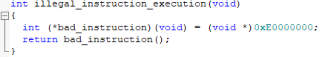软件会进入hardfault
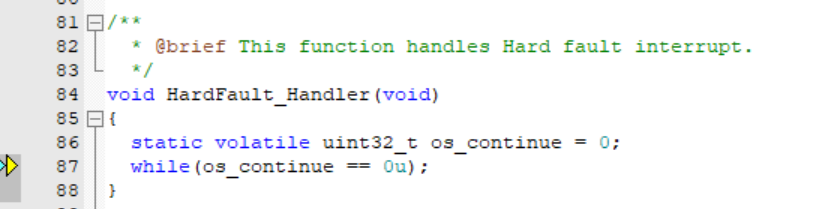查看"Regeister"窗口
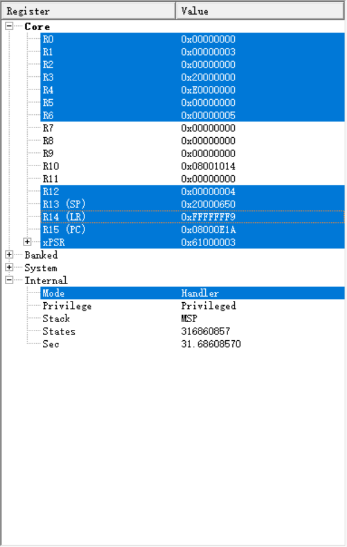此时需要注意寄存器LR
当进入异常处理程序的时候，LR寄存器会更新到一个特殊的值EXC_RETURN，高28会会被设置为1。这个值在异常处理程序执行结束时加载到 PC 寄存器中，将导致 CPU 执行异常返回序列。LR 寄存器的第 2 位确定进入异常之前使用的堆栈。
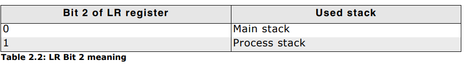查看"fault report 窗口"
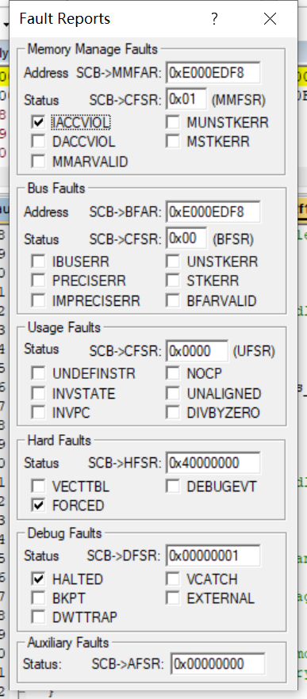此时我们可以看到Hard fault是由 MemManage fault上访产生的，造成MemManage fault的原因是IACCVIOL，具体可以查看上诉解释。
此时我们大概就能知道是什么原因造成的，那么如何定位产生异常的代码呢？
我们可以查看SP寄存器的值
当Hard fault 发生，MCU会保存下列寄存器的值在当前堆栈里
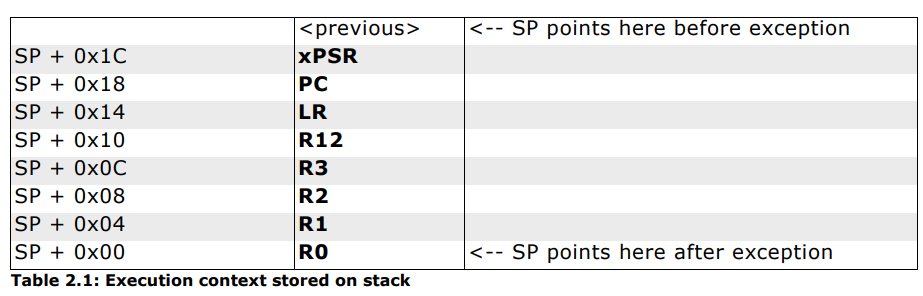我们可以在Memory窗口中查看堆栈里的值。
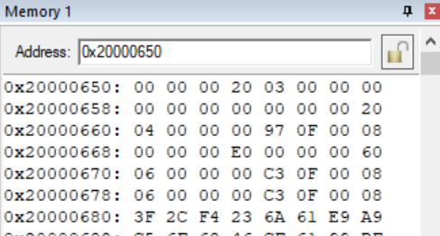我们可以看到LR 指针的值为0x08000F97。LR寄存器用于保存函数调用的返回地址。在ARM Cortex-M处理器中，LR寄存器是R14寄存器。 当处理器发生异常并执行异常处理程序时，当前执行指令的下一条指令地址会被保存到LR寄存器中。当异常处理程序执行完毕时，可以使用LR寄存器中的值将控制权返回到异常发生的位置。
之后我们可以在编译生成的map文件里查看具体的代码段。
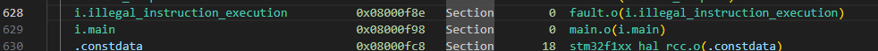可以看到0x08000F97落在了 illegal_instruction_execution 函数里。此时我们就可以去找这个函数里产生的一个IACCVIOL错误。
三. Attach 模式
有些时候我们无法在线仿真，比如固件在运行过程中除了fault，但是我们又不能擦掉当前的程序去仿真。或者我们压根就没有当时的程序了。此时就要借助Jlink Commander工具在不擦除程序的情况下控制程序的执行，读取寄存器的值。
3.1 Jlink Commander
Jlink Commander是SEGGER公司提供的一个命令行工具，用于与J-Link调试器进行交互和执行各种操作。它提供了一组命令，可用于操纵目标设备、调试应用程序以及执行其他与J-Link相关的任务。
Jlink Commander的使用方法可以参考SEGGER官方文档，我们也可以在终端中查看帮助
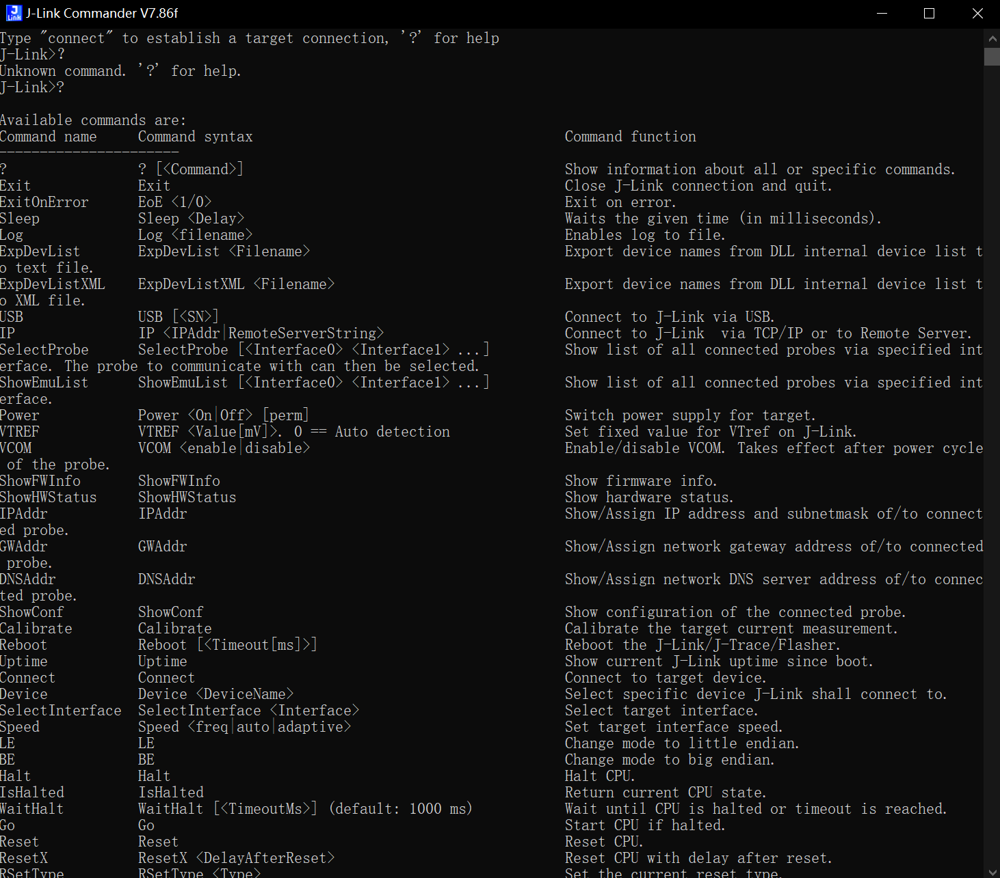连接目标MCU
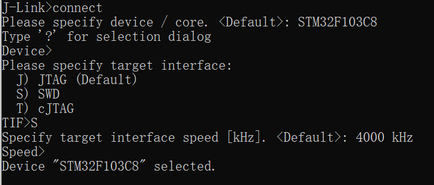运行程序
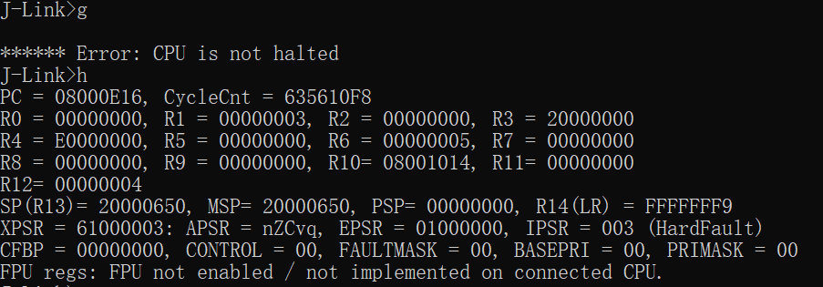敲入"g"命令，程序会开始运行，但是程序已经运行的情况下，我们需要halt一下MCU,指令为"h"
此时我们看到fault已经产生，LR寄存器的值是0xFFFFFFF9，且PC指针停在了0x08000E16（Hardfault）
SP指针的值为0x20000650,我们读取堆栈里的值
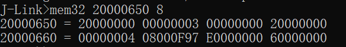余下的步骤可以参考章节二中读取map文件的介绍。